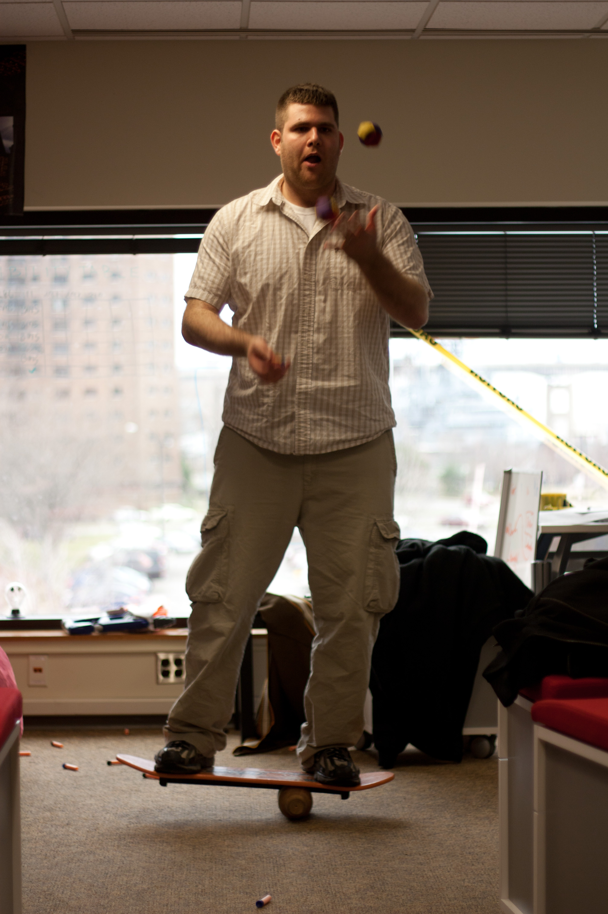
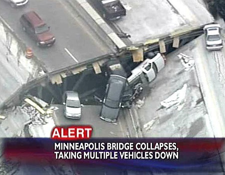
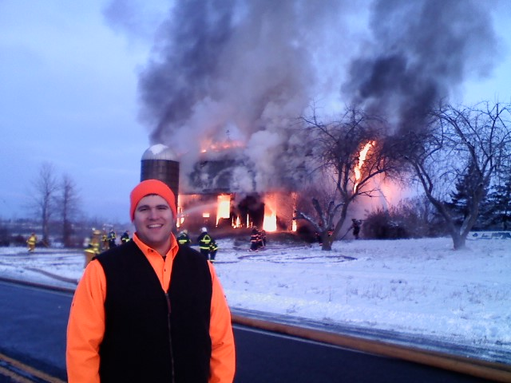
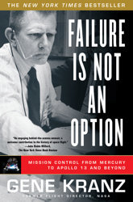

What does this button do?
Surviving Operational Disasters
Michael Canzoneri (@mikecanz)
Release Engineer at Synacor Inc.
Who is this guy?

Buffalo Perl Mongers
Synacor Internships
Release Engineer
(read: janitor)
I spend a lot of time around things that go wrong.
What sorts of disasters are we talking about?
Things *will* go wrong!
Let's cover...
- When the boom happens.
- What happens right after the boom.
- What you need to live.
- Who are the players.
- Cleaning up.
BOOM!
Turn green.
Don't Panic. ™
Enter Zen mode
This is the most important part of this talk.
Have nice day.
You about about to do something amazing.
You are going to fix this problem with your mind!

...so focus!
*NOW!*
...because most other people will be freaking out.

$bull->grab($horns);
You need data.
Lots and lots of data.
You should have known about all this data ahead of time.
Monitoring and Logs
(I hope you have them.)
You need the right people in the room. Now!
Not everyone has complete understanding of all the systems.
Including you!
Success will often come from one person who finds the answer.
Your goal is now to make it easy for that one person to get you the solution as fast as possible.
Who is the leader?
There is one leader.
One!
If there are zero leaders then become the leader.
Remember that people flee from disasters.
People who can't flee often don't want to be in charge.
Who else do we need?
People searching for the fix.
Keep track of who is searching for what.
This is hard when everyone is on chat and not in the room.
This is a parallel process.
Now we need people to execute on the good ideas.
Execute until the problem is solved.
Notes on executing fixes:
When executing ideas
- Do not make it worse.
- Triple check everything.
- Have other people review what you are going to do.
- Be honest about what is going on if a mistake happens.
- Sometimes good decisions go bad.
You are now a hero.
Everybody is sad that this happened but happy that it is fixed.
Review how well the disaster was handled separately from what the disaster was or what caused it.

Questions?
[any material that should appear in print but not on the slide]